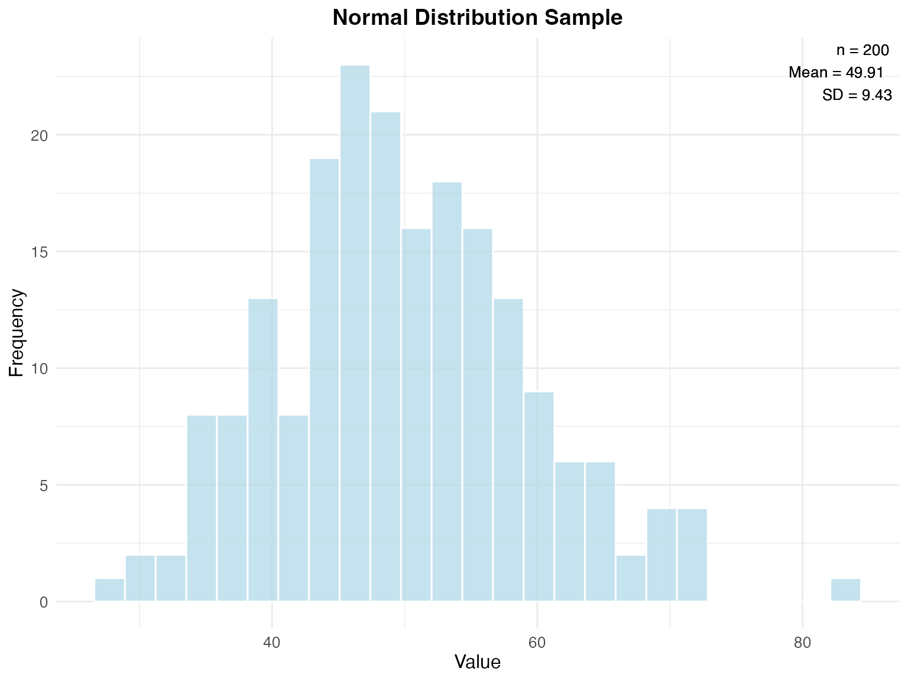
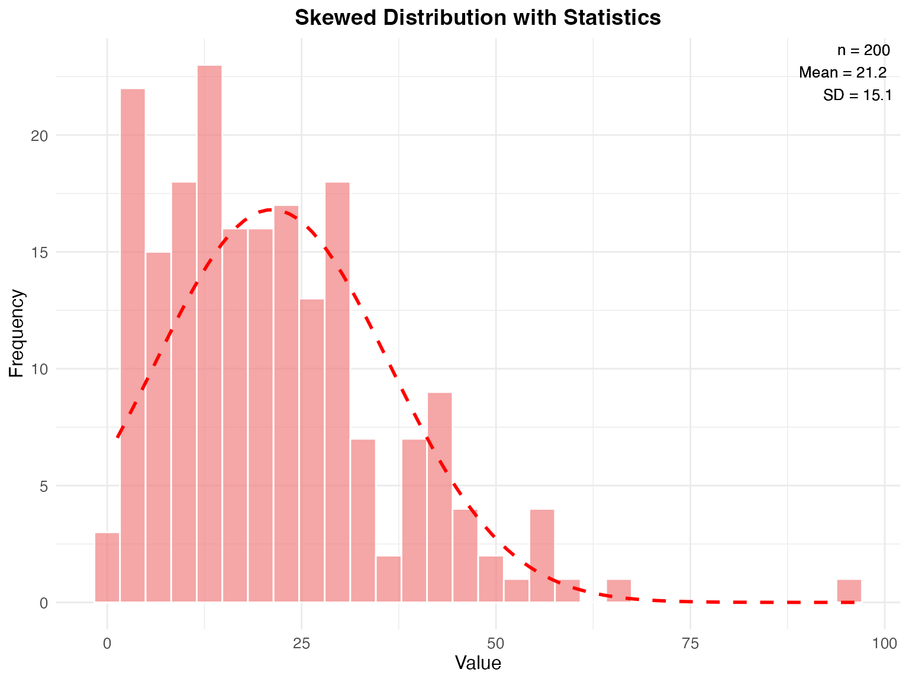
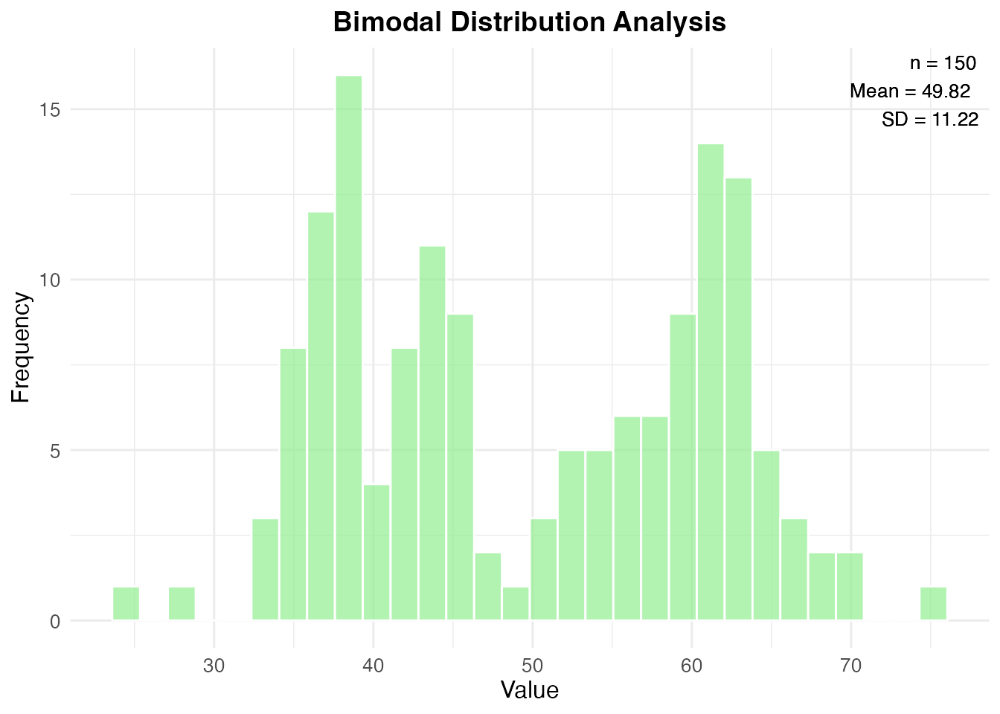

Introduction
The BasicStatsHelper package provides simple,
easy-to-use functions for common statistical analyses. This vignette
demonstrates the main functions with practical examples.
Generating Synthetic Data
Let’s start by generating some synthetic data to work with:
# Generate normal data
normal_data <- generate_synthetic_data(n = 200, type = "normal", seed = 123)
cat("Generated", length(normal_data$data), "observations from a", normal_data$distribution, "distribution\n")
#> Generated 200 observations from a Normal distribution
cat("True mean:", normal_data$true_mean, ", True SD:", round(normal_data$true_sd, 2), "\n")
#> True mean: 50 , True SD: 10
# Generate skewed data for comparison
skewed_data <- generate_synthetic_data(n = 200, type = "skewed", seed = 456)
cat("\nGenerated", length(skewed_data$data), "observations from a", skewed_data$distribution, "distribution\n")
#>
#> Generated 200 observations from a Right-skewed (Gamma) distributionDescriptive Statistics
Calculate comprehensive descriptive statistics:
# Analyze normal data
normal_stats <- descriptive_stats(normal_data$data)
print(normal_stats)
#> $mean
#> [1] 49.9143
#>
#> $median
#> [1] 49.41263
#>
#> $sd
#> [1] 9.431599
#>
#> $var
#> [1] 88.95506
#>
#> $min
#> [1] 26.90831
#>
#> $max
#> [1] 82.4104
#>
#> $q25
#> 25%
#> 43.74244
#>
#> $q75
#> 75%
#> 55.68396
#>
#> $n
#> [1] 200
#>
#> $missing
#> [1] 0
#>
#> attr(,"class")
#> [1] "descriptive_stats"
# Analyze skewed data
skewed_stats <- descriptive_stats(skewed_data$data)
cat("\nSkewed data statistics:\n")
#>
#> Skewed data statistics:
cat("Mean:", round(skewed_stats$mean, 2), "\n")
#> Mean: 21.2
cat("Median:", round(skewed_stats$median, 2), "\n")
#> Median: 18.97
cat("Standard deviation:", round(skewed_stats$sd, 2), "\n")
#> Standard deviation: 15.1Confidence Intervals
Calculate confidence intervals for the population mean:
# 95% confidence interval for normal data
ci_normal <- confidence_interval(normal_data$data, conf.level = 0.95)
cat("95% Confidence Interval for Normal Data:\n")
#> 95% Confidence Interval for Normal Data:
cat("Sample mean:", round(ci_normal$mean, 2), "\n")
#> Sample mean: 49.91
cat("CI: [", round(ci_normal$lower, 2), ",", round(ci_normal$upper, 2), "]\n")
#> CI: [ 48.6 , 51.23 ]
cat("Margin of error:", round(ci_normal$margin_error, 2), "\n")
#> Margin of error: 1.32
# Compare with different confidence levels
ci_99 <- confidence_interval(normal_data$data, conf.level = 0.99)
cat("\n99% Confidence Interval:\n")
#>
#> 99% Confidence Interval:
cat("CI: [", round(ci_99$lower, 2), ",", round(ci_99$upper, 2), "]\n")
#> CI: [ 48.18 , 51.65 ]
cat("Wider interval due to higher confidence level\n")
#> Wider interval due to higher confidence levelHypothesis Testing
Perform t-tests with clear interpretations:
# One-sample t-test: Is the mean significantly different from 50?
ttest_one <- simple_ttest(normal_data$data, mu = 50)
cat("One-sample t-test results:\n")
#> One-sample t-test results:
cat(ttest_one$interpretation)
#> Based on the One-sample t-test with 200 observations:
#> - Sample mean: 49.914
#> - T-statistic: -0.129
#> - P-value: 0.8979
#> - Result is not statistically significant at 95 % confidence level
#> - Conclusion: We fail to reject the null hypothesis that the mean equals 50
# Two-sample t-test: Compare normal vs skewed data
ttest_two <- simple_ttest(normal_data$data, skewed_data$data)
cat("\n\nTwo-sample t-test results:\n")
#>
#>
#> Two-sample t-test results:
cat(ttest_two$interpretation)
#> Based on the Two-sample t-test comparing 200 vs 200 observations:
#> - Group 1 mean: 49.914
#> - Group 2 mean: 21.204
#> - Mean difference: 28.711
#> - T-statistic: 22.804
#> - P-value: 0
#> - Result is statistically significant at 95 % confidence level
#> - Conclusion: We reject the null hypothesis of equal meansData Visualization
Create publication-ready plots:
# Basic histogram
p1 <- plot_histogram(normal_data$data,
title = "Normal Distribution Sample",
xlab = "Value",
bins = 25)
#> Warning in ggplot2::annotate("text", x = Inf, y = Inf, label = stats_text, :
#> Ignoring unknown parameters: `bbox`
print(p1)
# Histogram with normal overlay and statistics
p2 <- plot_histogram(skewed_data$data,
title = "Skewed Distribution with Statistics",
add_normal = TRUE,
add_stats = TRUE,
color = "lightcoral",
bins = 30)
#> Warning in ggplot2::annotate("text", x = Inf, y = Inf, label = stats_text, :
#> Ignoring unknown parameters: `bbox`
print(p2)
Complete Analysis Workflow
Here’s a complete example of analyzing a dataset:
# Generate a new dataset
test_data <- generate_synthetic_data(n = 150, type = "bimodal", seed = 789)
# Step 1: Descriptive statistics
desc_stats <- descriptive_stats(test_data$data)
cat("Dataset Summary:\n")
#> Dataset Summary:
cat("- Sample size:", desc_stats$n, "\n")
#> - Sample size: 150
cat("- Mean:", round(desc_stats$mean, 2), "\n")
#> - Mean: 49.82
cat("- Median:", round(desc_stats$median, 2), "\n")
#> - Median: 48.43
cat("- Standard deviation:", round(desc_stats$sd, 2), "\n")
#> - Standard deviation: 11.22
# Step 2: Confidence interval
ci <- confidence_interval(test_data$data)
cat("\n95% Confidence Interval: [", round(ci$lower, 2), ",", round(ci$upper, 2), "]\n")
#>
#> 95% Confidence Interval: [ 48.01 , 51.63 ]
# Step 3: Hypothesis test
ttest <- simple_ttest(test_data$data, mu = 45)
cat("\nHypothesis test (H0: μ = 45):\n")
#>
#> Hypothesis test (H0: μ = 45):
cat("P-value:", round(ttest$p.value, 4), "\n")
#> P-value: 0
cat("Significant?", ttest$significant, "\n")
#> Significant? TRUE
# Step 4: Visualization
plot_histogram(test_data$data,
title = "Bimodal Distribution Analysis",
add_stats = TRUE,
color = "lightgreen")
#> Warning in ggplot2::annotate("text", x = Inf, y = Inf, label = stats_text, :
#> Ignoring unknown parameters: `bbox`
Conclusion
The BasicStatsHelper package provides a streamlined
workflow for common statistical analyses:
-
generate_synthetic_data()- Create test datasets -
descriptive_stats()- Calculate comprehensive summary statistics -
confidence_interval()- Estimate population parameters -
simple_ttest()- Perform hypothesis testing with clear interpretations -
plot_histogram()- Create publication-ready visualizations
These functions are designed to be intuitive for beginners while providing the statistical rigor needed for research applications.